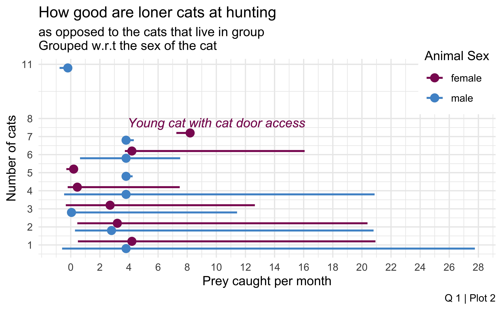

cat_annot <- cats_new |>
filter(n_cats > 0) |>
mutate(
age_grp = case_when(
age_years >= 0 & age_years <= 5 ~ "Kitten",
age_years > 5 & age_years <= 10 ~ "Young",
TRUE ~ "Mature"
)
) |>
group_by(age_grp, n_cats) |>
filter(n_cats < 2 | n_cats > 6) |>
summarise(prey_p_month = max(prey_p_month),
.groups = "keep") |>
mutate(
label_color = case_when(
age_grp == "Kitten" ~ "steelblue4",
age_grp == "Young" ~ "pink4",
TRUE ~ "maroon4"
)
)
cats_new |>
filter(n_cats > 0) |>
mutate(
age_grp = case_when(
age_years >= 0 & age_years <= 5 ~ "Kitten",
age_years > 5 & age_years <= 10 ~ "Young",
TRUE ~ "Mature"
),
hrs_bin = ifelse(hrs_indoors <= 10, 10, 20)
) |>
ggplot(aes(x = reorder(n_cats, str_sort(n_cats)),
y = prey_p_month)) +
geom_jitter(data = cats_new, color = "snow3") +
geom_jitter(aes(fill = age_grp),
size=2.2, pch=21, show.legend = FALSE) +
facet_wrap(~ fct_relevel(age_grp, c("Kitten", "Young", "Mature"))) +
scale_fill_manual(values=c("steelblue3","maroon4","pink2")) +
labs(
title = "How good are loner cats at hunting?",
subtitle = "as opposed to the cats that live in group \nGrouped w.r.t age",
caption = "Q 1 | Plot 1",
x = "Number of cats",
y = "Prey caught per month"
) +
geom_label_repel(
data = cat_annot,
aes(label = glue::glue("prey = {prey_p_month}")),
nudge_x = 0.4, nudge_y = 0.5, size = 3.5,
color = cat_annot$label_color,
fontface = 'bold',
) +
theme_minimal() Analysing Cat Hunting Behaviour
INFO 526 - Fall 2023 - Project 1
Team R-tisans of Visual : Visalakshi Prakash Iyer, Rahul Bangad, Kashyap Sai Prasad Nadendla, Athira Thekkemadathil Anilkumar
Understanding the Hunt: Cat Predatory Behavior
Dataset Description
Dataset is drawn from TidyTuesday
The Pet Cats data set comes from Movebank for Animal Tracking Data, collected from volunteers using GPS sensors on their pet cats around UK, US, Australia and New Zealand.
The dataset from US, UK, Australia, New Zealand have been merged to form a new data set which is used for plotting.
Q1. Are the cats which live together better at hunting than those which live alone?
Plot 1
Jitter plot with pray caught per month by the number of cats living together
Cats have been categorized based on their age group
Plot 2
- Line plot with pray caught per month by the number of cats living together
- Cats have been categorized based on their sex
Plot 1
Code
Plot
Insights
Kittens excel in hunting , especially when living alone or in pairs, capturing between 10 and 20 prey monthly.
Hunting efficiency declines as group size exceeds two, particularly among young cats which often capture less than 10 prey monthly.
Mature cats show varied hunting success rates, with a broad spread in the data.
Plot 2
Code
cats_new |>
filter(n_cats > 0) |>
group_by(animal_sex, n_cats) |>
summarise(avg_prey = median(prey_p_month),
min_prey = min(prey_p_month),
max_prey = max(prey_p_month),
.groups = "keep") |>
mutate (
n_cats = ifelse(animal_sex == "f", n_cats + 0.2, n_cats - 0.2),
avg_prey = ifelse(animal_sex == "f", avg_prey + 0.2, avg_prey - 0.2)
) |>
ggplot(aes(color=animal_sex)) +
geom_segment(aes(x = min_prey,
y = n_cats,
xend = max_prey,
yend = n_cats
),
linewidth = 0.8,
position = position_jitterdodge(dodge.width = 0)
) +
geom_point(aes(x = avg_prey, y = n_cats),
size = 3) +
scale_color_manual(values = c("maroon4", "steelblue3"),
labels = c("female", "male")) +
labs(
title = "How good are loner cats at hunting",
subtitle = "as opposed to the cats that live in group \nGrouped w.r.t the sex of the cat",
caption = "Q 1 | Plot 2",
x = "Prey caught per month",
y = "Number of cats",
color = "Animal Sex"
) +
scale_y_continuous(breaks = c(seq(0,8,1), c(11))) +
scale_x_continuous(breaks = c(seq(0,30,2))) +
geom_text(aes(x = 10, y = 7.7),
label = expression(italic("Young cat with cat door access")),
color = "maroon4",
alpha = 0.7
) +
theme_minimal() +
theme(
legend.position = c(1, 0.9),
legend.justification = "right",
legend.background = element_rect(fill="white",linetype = "blank")
)Plot
Insights
The plot compares the hunting efficiency of loner cats to those living in groups, categorized by sex (male and female).
Cats having access to a cat door tend to catch more prey than those without, indicating the importance of outdoor access for hunting.
Female cats, especially loners, display the highest hunting prowess, with one individual catching up to 11 prey items per month.
The spread of data points suggests variability in hunting abilities among both male and female cats.
On average, female cats seem to outperform male cats in terms of prey caught per month.
Q2. How does the reproductive status of cats influence the hunting pattern?
Plot 1
A density ridge plot with animal reproductive condition with prey caught per month
Categorized by country
Plot 2
Age of the cat with prey caught per month
Categorized by animal reproduction condition
Plot 1
Code
cats_new |>
ggplot(aes(x=prey_p_month,y=animal_reproductive_condition,
fill = factor(stat(quantile)))) +
stat_density_ridges(quantile_lines = TRUE,
quantiles = 3,
alpha = 0.5,
geom = "density_ridges_gradient",
calc_ecdf = TRUE,
bandwidth = 1.5) +
scale_fill_manual(values = c("pink2","steelblue","maroon4"),
name = "Quantile") +
scale_x_continuous(breaks = seq(0,23,5))+
facet_wrap(~ cats_new$study_site) +
labs(
title = "How are cats impacted by their reproductive condition?",
subtitle = "Categorized by different countries",
caption = "Q 2 | Plot 1",
x = "Prey per month",
y = "Annimal reproductive condition"
) +
theme_minimal() Plot

Insights
The graph shows how cats’ hunting abilities vary by country and neuter status. Cats who haven’t been neutered tend to be better hunters in both Australia and the United Kingdom.
Notably, in the US and New Zealand, data for unneutered cats is absent, among the displayed data, neutered cats in the US tend to catch slightly more prey, indicating that the effects of neutering on hunting abilities can vary by region.
Plot 2
Code
cats_new |>
ggplot(aes(x = prey_p_month, y = age_years,
color=animal_reproductive_condition)) +
geom_hex(bins=15, show.legend = FALSE) +
geom_hex(data = cats_new |>
filter(animal_reproductive_condition == "Unneutered"),
bins = 15,
fill = "maroon4",
color = "maroon4",
show.legend = TRUE) +
geom_vline(xintercept = 9.3, color="maroon4") +
geom_hline(yintercept = 12.9, color="maroon4") +
scale_color_manual(values=c("white", "black")) +
scale_x_continuous(breaks = seq(0,30,2)) +
scale_y_continuous(breaks = seq(0,24,4)) +
scale_fill_gradient(low = "pink2", high = "salmon2") +
labs(
title = "How are cats impacted by their reproductive condition?",
subtitle = "Observed w.r.t the age of the cat",
caption = "Q 2 | Plot 2",
x = "Prey caught per month",
y = "Age of the cat"
) +
theme_minimal() +
theme(
panel.grid.minor = element_line(linetype = "dashed", color = "grey"),
panel.grid.major = element_blank(),
legend.position = "top", legend.justification = "right"
) +
guides(
color = guide_legend(override.aes = list(fill = c("pink2", "maroon4"),
color = c("white", "black")),
title = "reproductive condition"
)
) +
annotate("label",
x = 21, y = 15,
label = expression(italic("spends only 2hrs inside")),
size = 2.5,
color = "maroon4",
fontface = "bold",
fill = alpha(c("white"),0.2)
) +
annotate("text",
x = 12, y = 18,
label = expression(italic("prey = 9")),
size = 3,
color = "black",
fontface = "bold"
) +
annotate("text",
x = 27, y = 13.5,
label = expression(italic("age = 12")),
size = 3,
color = "black",
fontface = "bold"
) +
coord_fixed() Plot

Insights
As cats age, they generally catch less prey, regardless of being Fixed or Unneutered.
Unneutered cats aged 10-14 years are the most proficient hunters.
Older unneutered cats catch fewer prey compared to their younger selves.
Data is limited on unneutered cats over 15 years old, suggesting they might hunt less or are underrepresented in the study.
Wrap up
Conclusion
Cats that live in group have a lower hunting spree compared to loner cats. Reasons might be old age, unavailability of cat doors or easy access to food and care by a cat-loving owner.
Female cats often have a decline in hunting capacities when living in group with other cats, unless they have access to cat door and they are young.
Neutered cats show a high spree for hunting compared to Unneutered cats.
Although age is a major factor in a cat’s hunting abilities, neutered cats manage to hunt more than the unneutered cats of equal age.
There weren’t much cats in NZ and US that were unneutered, which holds our insights back from exploring their hunting behavior for the said conditions.
Challenges faced
Our initial analysis plan included exploring ground speed while hunting for every individual cat in the dataset. Later it was discovered that there is no information on ground speed for cats in New Zealand. This would have been an interesting correlation.
The lack of data on unneutered cats (owing to the strict neutering policies in some countries) made the insights on the hunting pattern for unneutered cats too limited.
There were major chunk of missing values in the dataset coming from New Zealand and Australia. It was handled by imputation techniques. The veracity for the technique is tested by implementing various models and implementing data sampling to get accuracy in the process.
The variables that could be a part of the analysis were less. Hence, coming up with a combination of variables that accurately depict our insights was a challenge.
There were specific outliers in the data which needed to be explained, in order to justify the relations derived from the dataset. There were additional notes in the raw dataset that helped in analyzing the outliers of the data. The outliers are explained with annotations respectively.